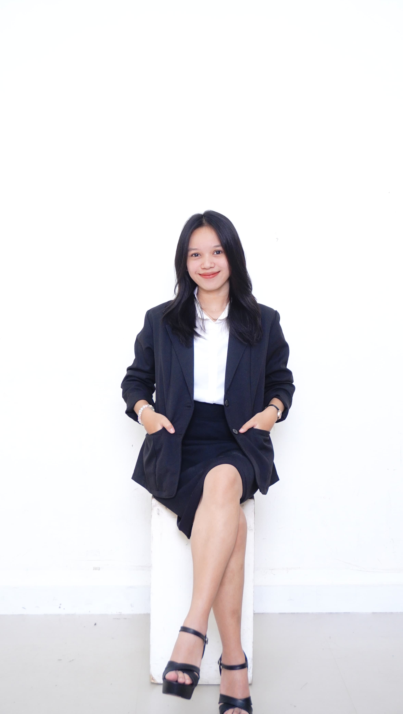

Sekolah Dasar (SD)
SD Inpres Pasang Lambe
Mahasiswa Ilmu Komputer

SD Inpres Pasang Lambe
SMPN 8 Lembang
Jurusan IPA
SMAN 4 Parepare
Program Studi Ilmu Komputer
Jurusan Teknologi Produksi dan Industri
Institut Teknologi Bacharuddin Jusuf Habibie